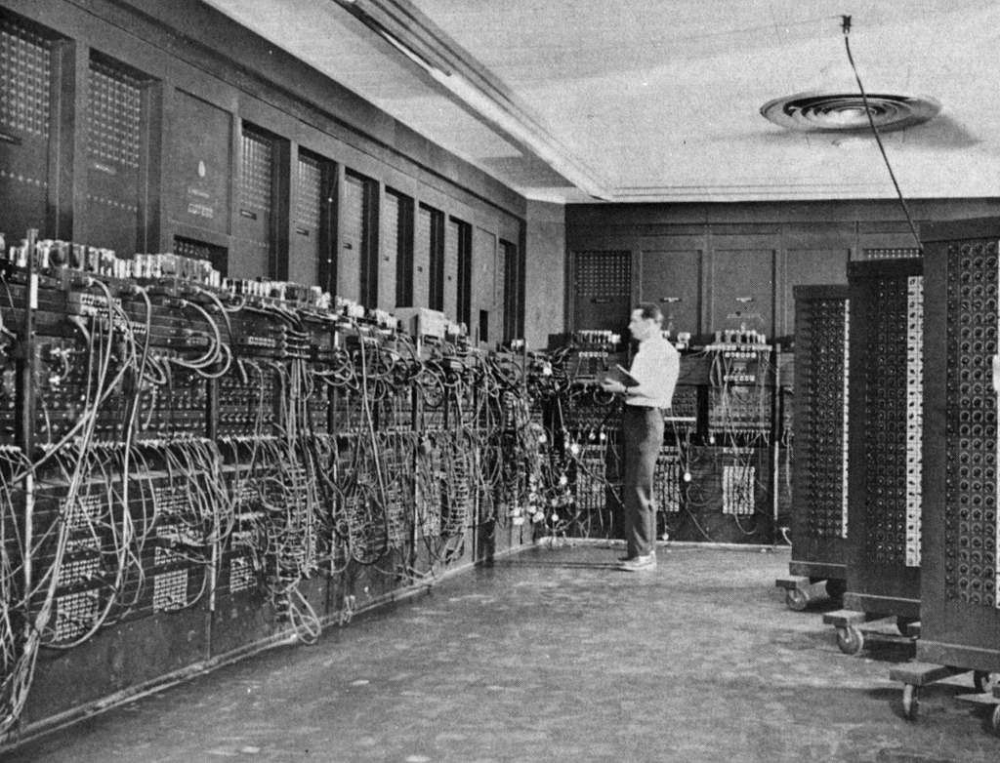

People ask me whether AI is going to take everyone’s jobs. I usually tell them it helped me find mine.
I understand why people are worried.
New technology rarely arrives quietly. It disrupts routines, changes industries, makes some skills more valuable, makes others less valuable, and forces people to reconsider work they assumed would always exist in roughly the same form.
AI is moving especially fast. Faster than laws, workplaces, schools, and most of us have had time to fully understand. That speed gives people plenty of legitimate reasons to be cautious.
But my own experience with AI does not begin with a company trying to replace workers.
It begins with coffee.
The problem was coffee
I was tired of going to the grocery store and discovering that my favorite coffee beans were out of stock again.
For many people, that is a small inconvenience. Pick another bag. Try something different. Maybe discover a new favorite.
Autism can make that kind of inconsistency feel much larger. When I find a food, drink, routine, or product that works, I want to know it will keep working. I want the taste to be the same. I want it to be available. I do not want to spend limited energy repeatedly searching for a replacement.
So I had what seemed like a perfectly reasonable solution: start a coffee company.
I could source the beans I wanted, package them consistently, and make sure my favorite coffee was always available. Other people could buy it too. It was a real business idea solving a real irritation in my life.
Naturally, I began with the part that interested me most.
Not suppliers. Not inventory. Not shipping rates. Not food regulations.
I started designing the company.
I worked on names, logos, colors, bags, labels, typography, positioning, story, and the feeling someone should get when they saw the coffee on a shelf.
That process eventually became the beginning of Fox & Timber.
At the time, I still thought I was creating a coffee company. What I was actually doing was discovering which part of creating a company made my brain light up.
I thought I wanted to sell coffee. What I really wanted was to build the company people could already imagine buying it from.
AI helped me realize I was solving the wrong problem
AI did not tell me that coffee was a bad idea.
It helped me examine what I was spending my time on, what I kept avoiding, and which parts of the project consistently held my attention.
I was excited about the identity. I was excited about the packaging. I was excited about the website, the story, the customer experience, and the possibility of turning a vague idea into something that looked like it already belonged in the world.
I was considerably less excited about roasting schedules, wholesale purchasing, fulfillment, shipping, perishable inventory, and selling bags of coffee one order at a time.
AI helped me step back far enough to see the pattern.
The valuable thing I was creating was not necessarily the coffee. It was the brand.
That question changed the entire business model.
Fox & Timber stopped being the identity attached to one possible coffee product and became a creative studio capable of building identities for many different products, businesses, people, and ideas.
That was worth more than a hill of beans.
AI did not build Fox & Timber for me
There is an important distinction between accelerating work and replacing the person responsible for it.
AI did not decide what Fox & Timber should feel like. It did not meet Scout. It did not understand why a fox, mountains, trees, weathered materials, and the visual language of the West meant something to me.
It did not choose the final logo, typography, layout, services, language, or direction.
Those decisions came from me.
What AI did was reduce the distance between a decision and a working result.
It wrote portions of the early HTML, CSS, and JavaScript. It helped organize pages and establish a framework. It explained why a layout behaved differently on a phone than it did on a laptop. When I could not find an error, it could often locate the missing character, conflicting rule, broken path, or small structural problem hiding inside hundreds of lines of code.
Some of those errors would have become future maintenance problems. Finding them early saved time, frustration, and potentially the cost of paying someone to diagnose them later.
AI also helped create a few visual assets, including background imagery and decorative trees used around the website. Those pieces still required direction, selection, refinement, and judgment, but generating usable starting material saved time and reduced the upfront cost of launching the site.
AI did not replace the creative director, developer, client, or business owner. In the beginning, I was all four of them. It helped one overwhelmed person carry more of those roles.
Three days instead of a week
I was able to get the initial Fox & Timber website running in roughly three days.
Without AI assistance, the same work would probably have taken me at least a week. Possibly longer once executive dysfunction, troubleshooting, research, and the inevitable moments of staring at code while wondering why one tiny element had moved six pixels to the left entered the equation.
That time difference matters.
For a large company, saving a few days may be a scheduling improvement. For one person working from the back of an SUV, with limited money, inconsistent energy, and no development team, it can determine whether an idea launches at all.
With AI: I can ask questions in the middle of the process, test an approach, understand unfamiliar code, find likely errors, and keep moving while the idea still has momentum.
That does not mean every answer is correct.
AI produces bad code, misunderstands requests, invents details, overcomplicates simple problems, and occasionally creates a fresh disaster while confidently explaining that everything is now fixed.
I still have to test the result.
I still need to understand enough to recognize when something does not make sense.
The tool is useful because I remain responsible for the work, not because responsibility has disappeared.
Did that destroy a job?
It would be easy to argue that I should have hired a web developer, graphic designer, copywriter, photographer, consultant, or illustrator to do each part.
The problem is that I did not have the money to hire all those people.
Without AI, the likely alternative was not a generously staffed launch.
The likely alternative was that the business remained an unfinished folder on my laptop.
AI helped me create enough of the foundation to begin.
If Fox & Timber grows, it can create work that did not exist before. It can hire designers, developers, writers, photographers, printers, accountants, marketers, production partners, and other specialists.
It can also help clients launch businesses that eventually hire their own employees.
In my case, AI did not take a job from an existing employee. It helped turn an idea with no budget into a business that could eventually create jobs.
That does not prove AI will create more jobs than it displaces everywhere.
It does show why the issue is more complicated than assuming every task performed by AI represents one human job erased.
Jobs have always changed with tools

Before electronic computers became common, organizations employed people to perform calculations by hand. These workers were often called human computers.
Electronic machines eventually took over much of that repetitive calculation.
Those machines also helped create entire categories of work: programming, software engineering, systems analysis, computer manufacturing, networking, database administration, web development, cybersecurity, digital design, technical support, and many more.
The transition was not painless or evenly distributed. New jobs did not automatically go to the same people whose work had changed. Training, access, geography, discrimination, and economic inequality all shaped who benefited.
That part matters.
Saying technology creates new work should never be used to dismiss the people harmed during the transition.
But it is also historically incomplete to look only at the occupations a technology reduced and ignore the industries it made possible.
Digital photography transformed darkrooms, film processing, publishing, journalism, and camera manufacturing. Desktop publishing changed typesetting. Computer-aided design changed drafting. Online commerce changed retail.
Each tool removed certain tasks, changed others, and created new specialties around itself.
I expect AI to follow a similar pattern.
Some jobs will shrink. Some tasks will stop requiring as much human labor. Some employers will absolutely use the technology as an excuse to cut people, overload remaining workers, or lower the value of skilled work.
Other jobs will expand. New services, products, companies, specialties, and problems will emerge.
The difficult question is not simply whether jobs will change.
They will.
The question is whether we manage that change in a way that gives ordinary people a reasonable chance to benefit from it.
Research points toward transformation, not one simple outcome
Current research does not support one clean prediction that AI will either destroy employment or create limitless prosperity.
The International Labour Organization has found that many occupations are more likely to be transformed through the automation of particular tasks than replaced in their entirety.
That still presents risks.
Work can become more intense. Employers may expect higher output without higher pay. Entry-level opportunities may shrink. Benefits may flow primarily to companies and people who already have money, infrastructure, education, and access.
Large-scale displacement has so far been more limited than some early predictions, but that does not guarantee the future will remain comfortable or fair.
I am not giving the industry a free pass
Finding AI useful does not mean I support every way the industry is growing.
AI feels almost weightless when it appears as a box on a screen, but the infrastructure behind it is physical.
Models run in data centers filled with servers, networking equipment, cooling systems, backup power, and electrical infrastructure.
The International Energy Agency expects global data-center electricity consumption to roughly double by 2030, with AI-focused facilities growing faster than data centers overall.
That demand can strain electrical grids, equipment supply, planning systems, and local infrastructure.
Water is another concern.
Some data centers use water-based cooling, and electricity generation can also have an indirect water footprint. Research from Lawrence Berkeley National Laboratory shows that water consumption can vary by more than ten thousand times between workloads depending on factors including server efficiency, cooling technology, local climate, and the electrical grid.
That enormous variation is important because it means there is no excuse for pretending every location and design has the same impact.
Companies should be required to explain where their water and electricity are coming from, how much they expect to use, what local communities will absorb, and how they plan to reduce those impacts.
New technology should not receive old-fashioned permission to consume public resources behind closed doors.
I think governments have failed to keep pace with the speed of AI infrastructure development.
Communities deserve meaningful notice and participation before enormous facilities are approved. Environmental impacts should be measured honestly. Water use, emissions, grid effects, noise, backup generators, tax incentives, and long-term public costs should be disclosed.
Companies should not be allowed to announce ambitious technological futures while making the environmental and community costs somebody else’s problem.
Regulation is not the enemy of useful technology.
Good regulation is how we keep usefulness from becoming an excuse for recklessness.
Dependency is another real risk
Environmental impact is not the only thing that worries me.
AI can become too easy to reach for.
It can answer before we have thought. It can provide a polished paragraph before we have decided what we believe. It can become a substitute for learning, struggling, remembering, creating, or tolerating uncertainty.
I use AI heavily.
It helps me organize thoughts when executive dysfunction makes language difficult. It helps turn scattered notes into usable structures. It helps me communicate when I know what I mean but cannot arrange the pieces into a coherent order.
That support is real and, for me, sometimes genuinely accessibility-related.
But I do not want it to become the source of every idea, belief, decision, or sentence.
There is a difference between using a tool to express yourself and allowing the tool to gradually replace the self being expressed.
Dependency also creates practical risks.
Services can change. Prices can rise. Companies can close. Models can become less useful. Private information can be mishandled. A person who no longer knows how their own work functions becomes vulnerable to whoever controls the tool.
I want AI in my workshop.
I do not want it to own the workshop.
What AI cannot do for me
AI did not drive Horizon out of Florida.
It did not cross the Million Dollar Highway, find a campsite, hear movement in the bushes, or photograph the fox who eventually became Scout.
It did not feel Durango become home.
It did not spend years masking autism, cycle through dozens of jobs, survive burnout, live in vehicles, or learn which kinds of environments make it possible for me to function.
It did not care about the coffee being out of stock.
It did not invent the need that started the project.
Those experiences are where the work comes from.
AI can help me build from my experiences. It cannot have those experiences for me.
That is why I do not see it as a replacement for creativity.
Creativity is not only the production of an image, paragraph, logo, or line of code.
It is noticing that something is missing. It is caring enough to imagine a different version. It is choosing what belongs, what feels wrong, what matters, and why any of it should exist.
AI can participate in the process.
It cannot supply the life that gives the process meaning.
My stance is neither worship nor panic
I do not think AI is magic.
I do not think it is harmless.
I do not believe every company developing it deserves trust, and I do not believe every use of it represents progress.
I also do not believe the only possible outcome is mass unemployment and the end of human creativity.
AI is a tool with unusual scale, speed, and reach.
It can widen access for people who could never afford a full team. It can help disabled and neurodivergent people organize, communicate, create, and work through barriers. It can help a small business move from idea to launch while there is still enough energy and money to continue.
It can also concentrate power, consume enormous resources, undermine workers, spread misinformation, encourage dependency, and make it easier for companies to avoid paying people fairly.
Both can be true.
My experience with Fox & Timber is one example of the useful side.
A coffee company changed into a creative studio. A website went from idea to working foundation in days. Problems were caught earlier. Costs stayed low enough for the project to survive. A business now exists that might eventually create work for other people.
AI did not remove me from that process.
It made it possible for me to remain in it.
I may still make the coffee
None of this means the original coffee company is gone forever.
I still like the idea.
I still want consistent beans, good packaging, a thoughtful identity, and the comforting knowledge that my favorite coffee will not disappear from the shelf without warning.
Maybe Fox & Timber will eventually build that company too.
If it happens, it will not be because AI replaced my creativity.
It will be because AI helped me discover where my creativity belonged.
Sources and further reading
- International Labour Organization: Generative AI and Jobs, 2025 Update
- International Labour Organization: The Impact of GenAI on Jobs, Productivity and Work Organization
- International Energy Agency: Key Questions on Energy and AI
- Lawrence Berkeley National Laboratory: The Water Use of Data Center Workloads
- Computer History Museum: People and Computers